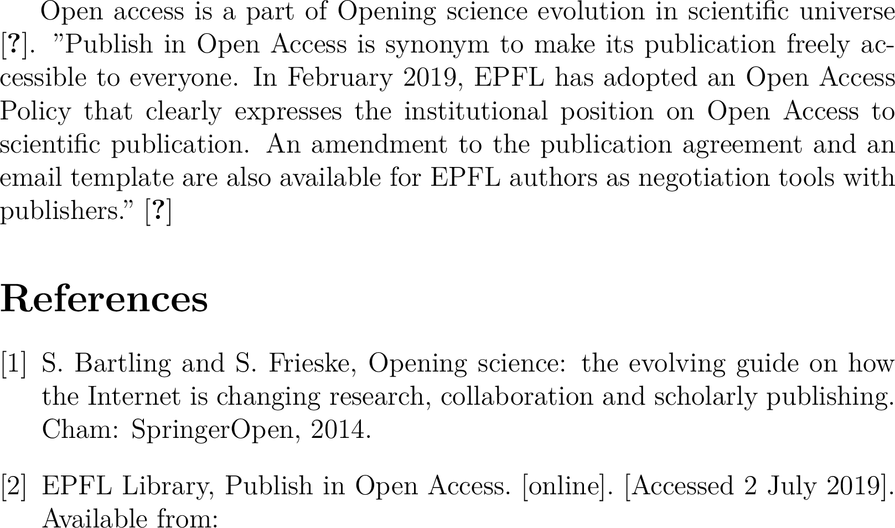
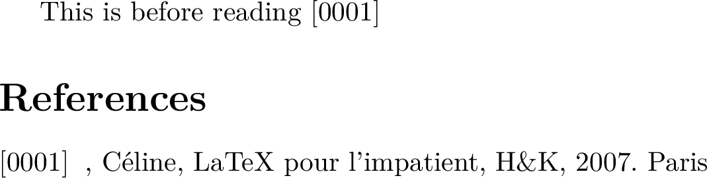

References
Overview
Teaching: 0 min
Exercises: 0 minQuestions
How can I introduce in-text citations and bibliographies in my LaTeX document?
Objectives
Create in-text citations
Create final bibliographies
Create bibliography’s datasets
Change bibliography’s styles
This part of the course displays how LaTeX deals with bibliography and in-text citations: by using the environment {thebibliography} and by using BibTeX.
The environment {thebibliography}
The commands of the environment {thebibliography} are embedded within LaTeX, for that reason these commands are integrated directly in your .tex file. This environment is useful for court bibliographies.The environment {thebibliography} starts by \begin{thebibliography} and ends by \end{thebibliography}, each bibliography element is introduced by the command \bibitem.
05-ref-1
Tex file : 05-ref-1.tex
\documentclass[12pt]{article}
\usepackage[utf8]{inputenc}
\usepackage{lmodern}
\usepackage[english]{babel}
\begin{document}
Open access is a part of Opening science evolution in scientific universe \cite{Bartling2014}.
"Publish in Open Access is synonym to make its publication freely accessible to everyone. In February 2019, EPFL has adopted an Open Access Policy that clearly expresses the institutional position on Open Access to scientific
publication. An amendment to the publication agreement and an email template are also available for EPFL authors as negotiation tools with publishers." \cite{EPFLlibrary2019}
\begin{thebibliography}{1}
\bibitem{Bartling2014}
S. Bartling and S. Frieske, Opening science: the evolving guide on how the Internet is changing research,
collaboration and scholarly publishing. Cham: SpringerOpen, 2014.
\bibitem{EPFLlibrary2019}
EPFL Library, Publish in Open Access. [online]. [Accessed 2 July 2019]. Available from:
\end{thebibliography}
\end{document}
Compilation : 05-ref-1.pdf

The command \bibitem for the final bibliography and \cite for the in-text citations
The basic syntax for using \bibitem is \bibitem[label]{key}
The optional parameter [label] allow you to customize the labeling system for your bibliography entry. Without introducing this parameter, the entries will follow a numerical order as in the previous example.
The compulsory parameter {key} allow to link commands \bibitem and \cite.
In-text citations are introduced by the commands cite{key} as in the previous example ``cite{Barkling2014} linking it
with the bibliographic item containing the same key in the final bibliography.
Setting the indentation and width of labels in the final bibliography
The command \begin{thebibliography}{} requires a mandatory argument. If you do not set this parameter, an error message
is diplayed. If you do not set it correctly the indentation of the final bibliography will be chaotic. In fact,
this argument determines the width of the widest bibliographic label and the amount of indentation of
the final bibliography.
05-ref2
Tex file : 05-ref2.tex
\documentclass[a4paper]{article}
\usepackage[utf8]{inputenc}
\usepackage{lmodern}
\usepackage[english]{babel}
\begin{document}
This is before reading \cite{Chevalier}
\begin{thebibliography}{abcd}
\bibitem[0001]{Chevalier}, Céline, LaTeX pour l'impatient,
H\&K, 2007. Paris
\end{thebibliography}
\end{document}
Compilation : 05-ref2.pdf

If you use the environment {the bibliography} in a document defined as an article, the title of your final
bibliography will be “References”/en and “Références”/fr, but for a document defined as a book or a report
“Bibliography”/en and “Biblographie”/fr.
Key Points
BiBTeX, in-text citations, bibliography, LaTeX, references, bibliographic styles